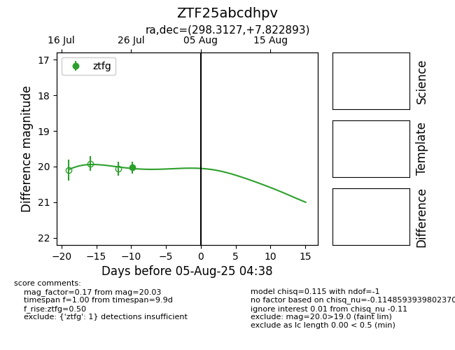

Target ZTF25abcdhpv at 2025-08-05 04:38, see:
FINK: fink-portal.org/ZTF25abcdhpv
Lasair: lasair-ztf.lsst.ac.uk/objects/ZTF25abcdhpv
ALeRCE: alerce.online/object/ZTF25abcdhpv
alt names
ZTF25abcdhpv (ztf,fink)
coordinates:
equatorial (ra, dec) = (298.3127,+7.82289)
galactic (l, b) = (47.1253,-9.95456)
photometry
last ztfg=20.03
1 ztfg detections
